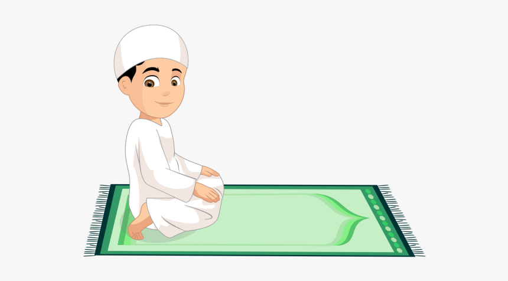

Wuzu steps
Step 1: Wash both hands. wash your both hands up to your wrists three times, make sure that water has reached among the fingers and thumb too.
Step 2: Rinse your mouth. Take water in your palm of right hand and put it into your mouth, keep on rinsing your mouth like this three times and make sure, there is no more food remaining in your mouth.
Step 3: Rinse your nose. Take water in your palm of right hand and inhale it carefully into your nose three times. Use your left hand if necessary to help blowing it out
Step 4: Wash your face. wash your whole face three times while starting from your forehead to the bottom of the chin and from your right ear to the left ear properly.
Step 5: Wash your arms. wash your right hand up to the elbow properly and make sure that no part of the arm has been left dry then wash left hand like this three times.
Step 6: Perform Masah. wipe your both wet hands from forehead to back of your neck and then wipe back from your neck to forehead again, do it only one time.
Step 7: Wipe your both ears. wipe the grooves and holes of ears with the wet index fingers of your both hands while also using your thumbs of both hands to clean your behind ears from the bottom upwards. do it only one time.
Step 8: Wash your both feet. starting from right foot, wash your both feet to the ankles three times, Use your pinky finger and go through each toe to get rid of anything between the toes and make sure that water has reached between the toes and covered the rest of the foot.
“Ash-hadu Anlaa ilaaha illALLAHu wahdahuu laa shariikalahu, wa ash-hadu anna Muhammadan ‘abduhuu wa rasuuluhu.”

NAMAZ STEPS (نماز کا طریقہ)
Step 1: Neeyat(نیت):
نمازی قبلہ رُخ سیدھا کھڑا ہوکر ہاتھوں کو کندھوں یا کانوں تک اٹھاتے ہوئے تکبیرِ تحریمہ کہے
Step 2: Takbeer-e-Tahrima (تکبیرِ تحریمہ):
للّٰہُ اَكْبَرُ
اللہ سب سے بڑا ہے۔
بخاری 738 ، مسلم862
تکبیرِ تحریمہ کے بعد کی دعائیں
اَللّٰهُمَّ بَاعِدْ بَـيْنِىْ وَبَيْنَ خَطَايَاىَ كَمَا بَاعَدْتَّ بَيْنَ الْـمَشْرِقِ وَالْـمَغْرِبِ اَللّٰهُمَّ نَـقِّنِىْ مِنْ خَطَاىَ كَمَا يُـنَـقَّى الثَّوْبُ الْاَبْيَضُ مِنَ الدَّنَسِ. اَللّٰهُمَّ اغْسِلْنِىْ مِنْ خَطَايَاىَ بِالثَّـلْـجِ وَالْـمَاۗءِ وَالْبَـرَدِ.ِ
اے اللہ!میرے اور میرے گناہوں کے درمیان دوری کردے جیسے تونے مشرق اور مغرب کے درمیان دوری پیدا فرمائی ہے۔ اے اللہ! مجھے گناہوں سے صاف کردے جس طرح سفید کپڑا میل کچیل سے صاف کیا جاتا ہے۔ اے اللہ! مجھ سے میرے گناہ برف، پانی اور اولوں کے ساتھ دھو دے۔
صحیح البخاري، الاذان، باب ما یقول بعد التکبیر؟ حدیث:744 وصحیح مسلم، المساجد، باب ما یقال بین تکبیرةالاحرام والقراءة؟ حدیث:1354 واللفظ له۔
Step 3: Al-Qiyam (القیام):
سُبْحٰنَكَ اللّٰهُمَّ وَبِـحَمْدِكَ وَتَـبَارَكَ اسْمُكَ وَتَـعَالٰي جَدُّكَ وَلَآ اِلٰهَ غَيْـرُكَ.
اے اللہ! میں تیری حمد کے ساتھ تیری پاکیزگی بیان کرتا ہوں اور تیرا نام بہت بابرکت ہے اور تیری شان بلند ہے اور تیرے سوا کوئی معبود نہیں۔
سنن ابي داود، الصلاة، باب من راي الاستفتاح بسحانك اللهم وبحمدك، حديث:775,776 وجامع الترمذي، الصلاۃ، باب ما یقول عند افتتاح الصلاۃ؟ حدیث:243 , ابن ماجہ 806
اَعُوْذُ بِاللّٰهِ السَّمِيْعِ الْعَلِيْمِ مِنَ الشَّيْـطٰنِ الرَّجِيْمِ مِنْ هَـمْزِهٖ وَنَـفْخِهٖ وَنَـفْثِهٖ.
میں پناہ مانگتا ہوں اللہ کی (جو) سننے والا، جاننے والا ہے، شیطان مردود سے اس کی دیوانگی سے، اس کے کِبر سے اور اس کے شعروں سے۔
سنن ابي داود، الصلاة، باب من راي الاستفتاح.......، حدیث: 775 وصحیح ابن خزیمة حدیث:427، وارواء الغلیل:2/51-53، وصفة صلاۃ النبی صلی اللہ علیہ وآلہ وسلمللالبانی، ص:76، 77
بِسْمِ اللّٰهِ الرَّحْمٰنِ الرَّحِيْمِ
(شروع) اللہ کے نام سے جو نہایت رحم کرنے والا، بڑا مہربان ہے۔
اَلْـحَمْدُ لِلّٰهِ رَبِّ الْعٰلَمِيْنَ - ۙالرَّحْمٰنِ الرَّحِيْمِ- مٰلِكِ يَوْمِ الدِّيْنِ- اِيَّاكَ نَعْبُدُ وَاِيَّاكَ نَسْتَعِيْنُ- اِھْدِنَا الصِّرَاطَ الْمُسْتَـقِيْمَ- صِرَاطَ الَّذِيْنَ اَنْعَمْتَ عَلَيْهِمْ- غَيْرِ الْمَغْضُوْبِ عَلَيْهِمْ وَلَا الضَّاۗلِّيْنََ
تمام تعریفیں اللہ ہی کے لیے ہیں جو پالنے والا ہے تمام جہانوں کا۔ نہایت رحم کرنے والا، بڑا مہربان ہے۔ مالک ہے یومِ جزا کا۔ تیری ہی ہم عبادت کرتے ہیں اور تجھ ہی سے ہم مدد چاہتے ہیں۔ دِکھا ہمیں سیدھا رستہ، ان لوگوں کا رستہ جن پر تو نے انعام کیا، ان کی نہیں جن پر غضب کیا گیا اور نہ گمراہوں کی ۔
(صحیح البخاري، الاذان، باب وجوب القراة للامامام والماموم.....، حدیث:756۔ ) (سنن ابی داود، الصلاة باب من ترك القراءة فی صلاته بفاتحة الکتاب، حدیث:823) بخاری 743 ، مسلم 892
بِسْمِ اللّٰهِ الرَّحْمٰنِ الرَّحِيْمِ
(شروع) اللہ کے نام سے جو نہایت رحم کرنے والا، بڑا مہربان ہے۔
قُلْ هُوَ اللّٰهُ اَحَدٌ -ۚ اَللّٰهُ الصَّمَدُ -ۚلَمْ يَلِدْ وَلَمْ يُوْلَدْ -ۙ وَلَمْ يَكُنْ لَّهٗ كُفُوًا اَحَدٌ
(آپ) کہہ دیجے: وہ اللہ ایک ہے، اللہ بے نیاز ہے، اس کی کوئی اولاد نہیں اور نہ وہ کسی کی اولاد ہے اور نہ اس کا کوئی ہم پلہ ہے۔
Step 4: Ruku (رکوع):
رکوع کی دعائیں
رکوع میں جاتے وقت کندھوں یا کانوں تک رفع الیدین کرتے ہوئے اَللّٰہُ اَکْبَرُ کہیں۔
اَللّٰہُ اَكْبَرُ
اللہ سب سے بڑا ہے۔
صحیح البخاري، الاذان، باب رفع الیدین فی التکبیرة الاولٰی، حدیث: 735، 736
سُبْحَانَ رَبِّيَ الْعَظِيْمِ
پاک ہے میرا رب عظمت والا۔
مسلم 1814 ، ابن ماجہ 888
سُبْحَانَكَ اللّٰهُمَّ رَبَّنَا وَبِحَمْدِكَ اللّٰهُمَّ اغْفِرْلِيْ
پاک ہے تو اے اللہ! اے ہمارے رب! اپنی تعریف کے ساتھ، اے اللہ! مجھے معاف فرمادے۔
بخاری 794 ، مسلم 1085
رکوع سے اٹھنے کی دعائیں
رکوع سے اٹھتے وقت کندھوں تک رفع الیدین کرتے ہوئے سمع اللّٰه لمن حمده کہیں۔
سَمِعَ اللّٰهُ لِمَنْ حَمِدَهٗ
اللہ نے سن لی جس نے اس کی تعریف کی۔
صحیح البخاري، الاذان، باب رفع الیدین فی التکبیرة الاولٰی، حدیث: 735، 736 ، بخاری 796 ، مسلم1067
رَبَّنَا وَلَكَ الْحَمْدُ حَمْدًا كَثِيْرًا طَيِّبًا مُّبَارَكًا فِيْهِ
اے ہمارے رب! تیرے ہی لیے ہر قسم کی تعریف ہے۔ تعریف بہت زیادہ
صحیح البخاري، الاذان حدیث:799
Step 5: Sajda(سجدہ):
سجدے کی دعائیں
سجدے میں جاتے ہوئے اَللّٰہُ اَکْبَرُ کہیں۔
بخاری 738 ، مسلم 862
سُبْحَانَ رَبِّيَ الْاَعْلٰى
پاک ہے میرا رب جو سب سے بلند ہے۔
مسلم 1814
دو سجدوں کے درمیان کی دعائیں
سجدے سے اٹھتے ہوئے اَللّٰہُ اَکْبَرُ کہیں۔
رَبِّ اغْفِرْلِيْ، رَبِّ اغْفِرْلِي
اے میرے رب! مجھے معاف کردے۔ اے میرے رب! مجھے معاف کردے۔
ابودؤد 874 ، دارمی 1325 ، ابن ماجہ 897
اس کے بعد نمازی اَللّٰہُ اَکْبَرُ کہہ کر دوسرا سجدہ کرے گا اور سجدے کی مذکورہ دعاؤں میں سے جو یاد ہو پڑھے گا، پھر اَللّٰہُ اَکْبَرُ کہہ کر سجدے سے سر اُٹھائے گا اور باقی نماز مکمل کرے گا۔
Step 7: Tashahhud(تشہد):
تشہد اور درود وسلام
اَلتَّحِيَّاتُ لِلّٰهِ وَالصَّلَوٰتُ وَالطَّـيِّـبَاتُ اَلسَّلَامُ عَلَيْكَ اَيُّـهَا الـنَّبِىُّ وَرَحْمَةُ اللّٰهِ وَبَـرَكَاتُهٗ اَلسَّلَامُ عَـلَـيْـنَا وَعَلٰى عِبَادِ اللّٰهِ الصّٰلِحِيْنَ اَشْهَدُ اَنْ لَّآ اِلٰهَ اِلَّا اللّٰهُ وَاَشْهَدُ اَنَّ مُـحَمَّدًا عَـبْدُهٗ وَرَسُوْلُهٗ.
(میری) تمام قولی، فعلی اور مالی عبادتیں اللہ ہی کے لیے ہیں، اے نبی! آپ پر سلام ہو اور اللہ کی رحمت اور اس کی برکات ہوں، ہم پر اور اللہ کے (دیگر) نیک بندوں پر بھی سلام ہو، میں گواہی دیتا ہوں کہ اللہ کے سوا کوئی معبود نہیں اور میں گواہی دیتا ہوں کہ محمد صلی اللہ علیہ وآلہ وسلم ا
بخاری 831،835 ، مسلم 897
اَللّٰهُمَّ صَلِّ عَلىٰ مُـحَمَّدٍ وَّ عَليٰٓ اٰلِ مُـحَمَّدٍ كَمَا صَلَّــيْتَ عَليٰٓ اِبْـرَاهِيْمَ وَ عَليٰٓ اٰلِ اِبْـرَاهِيْمَ اِنَّكَ حَمِيْدٌ مَّـجِيْدٌ اَللّٰهُمَّ بَارِكْ عَلىٰ مُـحَمَّدٍ وَّ عَليٰٓ اٰلِ مُـحَمَّدٍ كَمَا بَارَكْتَ عَليٰٓ اِبْـرَاهِيْمَ وَ عَليٰٓ اٰلِ اِبْـرَاهِيْمَ اِنَّكَ حَمِيْدٌ مَّـجِيْدٌ.
اے اللہ! رحمت نازل فرما محمد (صلی اللہ علیہ وآلہ وسلم) پر اور آلِ محمد (صلی اللہ علیہ وآلہ وسلم) پر جیسے تونے رحمت نازل فرمائی ابراہیم پر اور آلِ ابراہیم پر، یقیناً تو قابلِ تعریف، بڑی شان والا ہے۔ اے اللہ! برکت نازل فرما محمد (صلی اللہ علیہ وآلہ وسلم) پر اور آلِ محمد (صلی اللہ علیہ وآلہ وسلم) پر جیسے تونے برکت نازل فرمائی ابراہیم پر اور آلِ ابراہیم پر، یقیناً تو قابلِ تعریف، بڑی شان والا ہے۔
صحیح البخاري، احادیث الانبیاء، حدیث: 3370 وصحیح مسلم، الصلاة، باب الصلاة علی النبی صلی
اَللّٰهُمَّ اِنِّيْ ظَلَمْتُ نَـفْسِىْ ظُلْمًا كَثِيْرًا وَّلَا يَغْفِرُ الذُّنُ
اے اللہ! بلاشبہ میں نے اپنی جان پر بہت زیادہ ظلم کیا اور تیرے سوا کوئی گناہوں کو معاف نہیں کرسکتا، پس تو اپنی خاص بخشش سے مجھے معاف فرمادے اور مجھ پر رحم فرما، یقیناً تو بہت بخشنے والا، انتہائی م
صحیح البخاري، الاذان، باب الدعاء قبل السلام، حدیث: 834 وصحیح مسلم، الذكر والدعاء، باب الدعوات والتعوذ، حدیث: 6869

Step 8: Salam(سلام):
سلام، تشہد، درود اور دعاؤں سے ف
اَلسَّلَامُ عَلَيْکُمْ وَرَحْمَةُ اللّٰهِ
سلام ہو تم پر اور رحمت اللہ کی۔
سنن ابی داود، ابواب الركوع والسجود، باب فی السلام، حدیث:996
COPYRIGHTS 2022-2023 Shabab Salafia | ALL RIGHT RESERVED